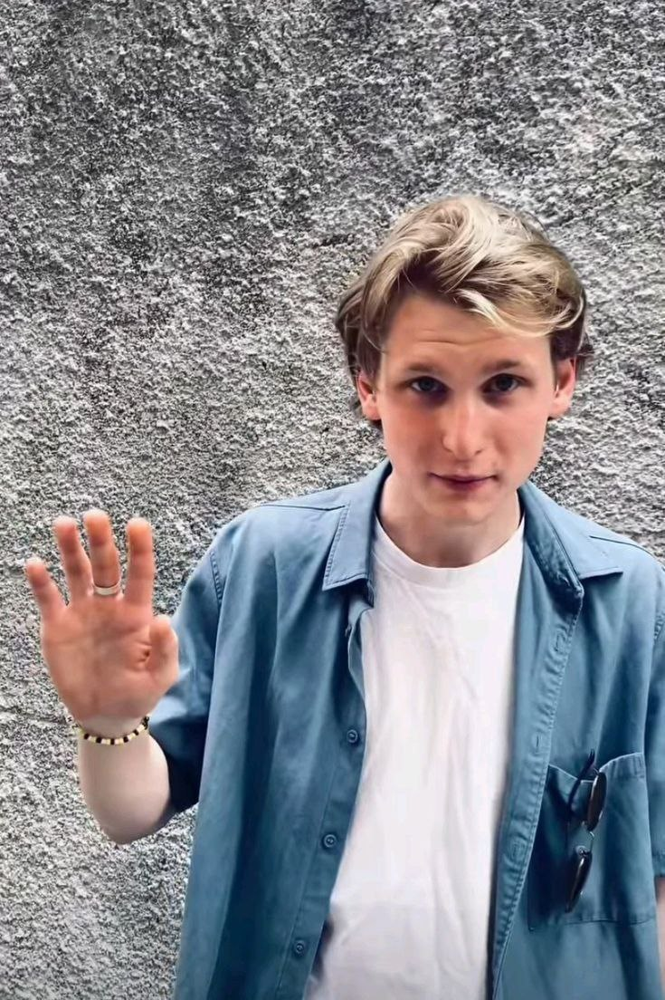
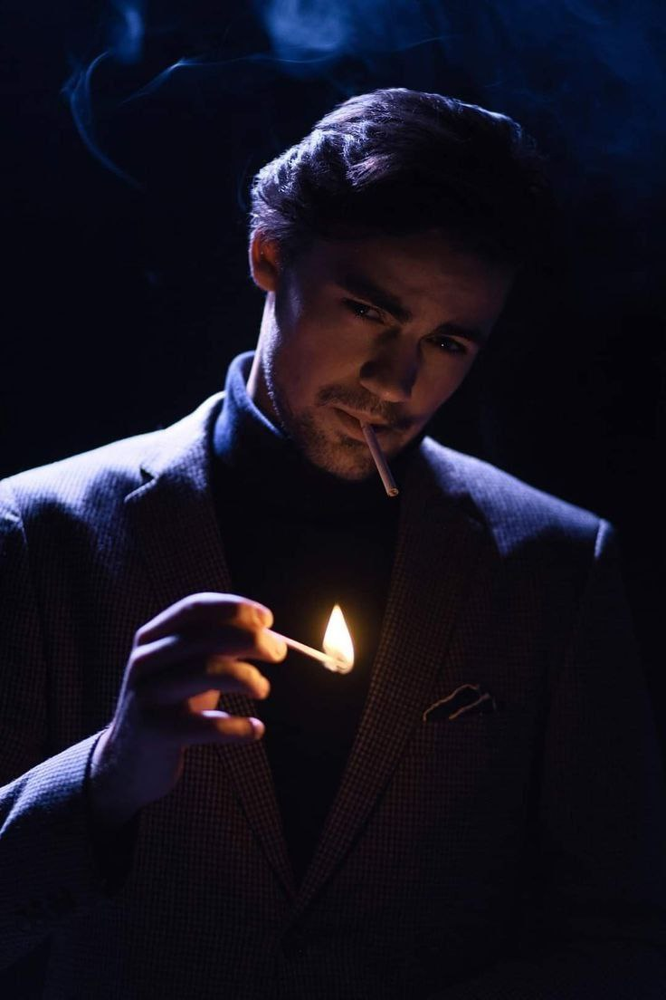

Головна
Пісні
Галерея
Концерти
Учасники
Роман Андрійович Дебрін
23 роки
Дата народження: 07.12.2000
Актор, саксофоніст
Виріс у Виноградарі
Батько: Андрій Полікарпович Дебрін
Мама: Олеся Дебріна

Євген Ігорович Запояско
22 роки
Дата народження: 20.02.2001
Басист
Виріс у Виноградарі
Зріст: 177см
Вага: 68кг
Розмір взуття: 43
Кирило Романович Липко
22 роки
07.09.2001
Барабанщик
Із Кременчука Полтавської області
Влад Михальчук
22 роки
26.01.2001
Соліст і гітарист
Із Хмельницького
Зріст: 189см
Розмір взуття: 42
Михайло Матюхін
24 роки
04.10.1999
Піаніст, вокаліст, гітарист
З Кривого Рогу
Зріст: 182 см
Вага: 77 кг
Розмір взуття: 41

Андрій Ігорович Ширко
24 роки
Ріст: 177 см
Вага: 57 кг